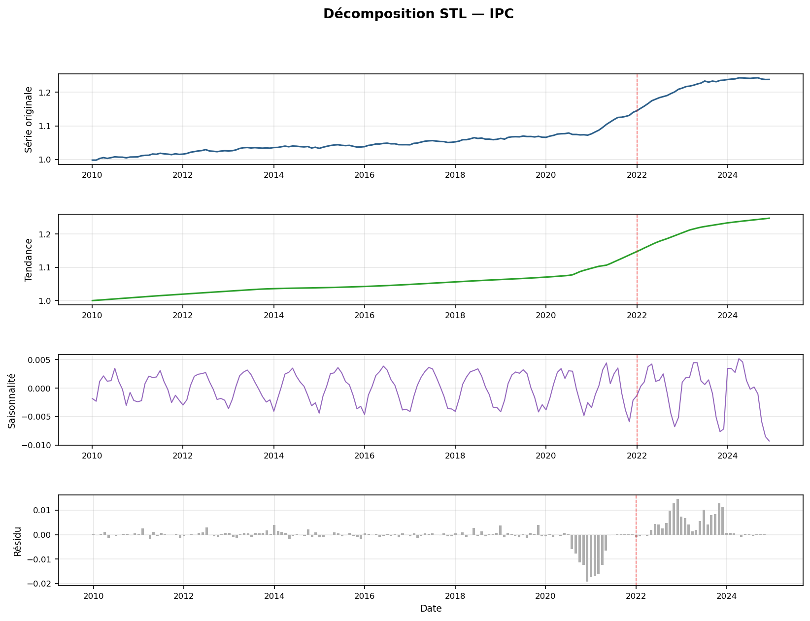
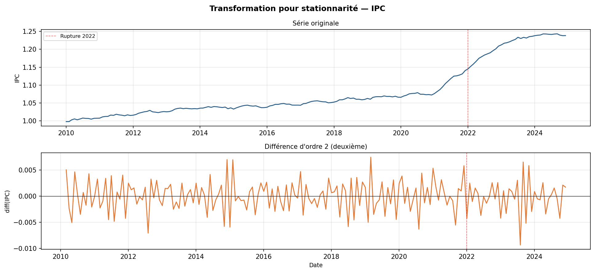
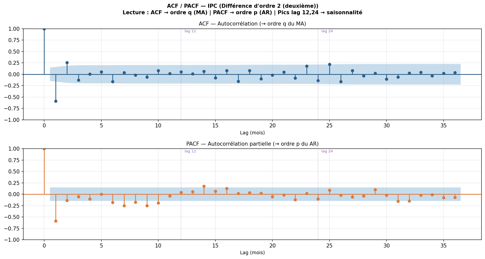
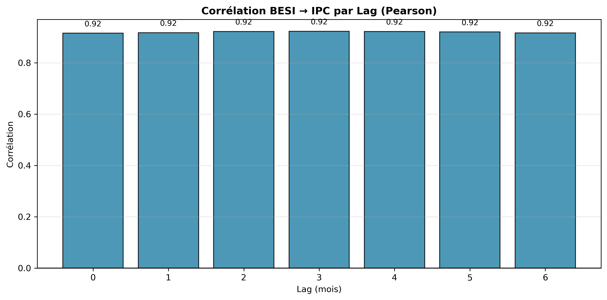
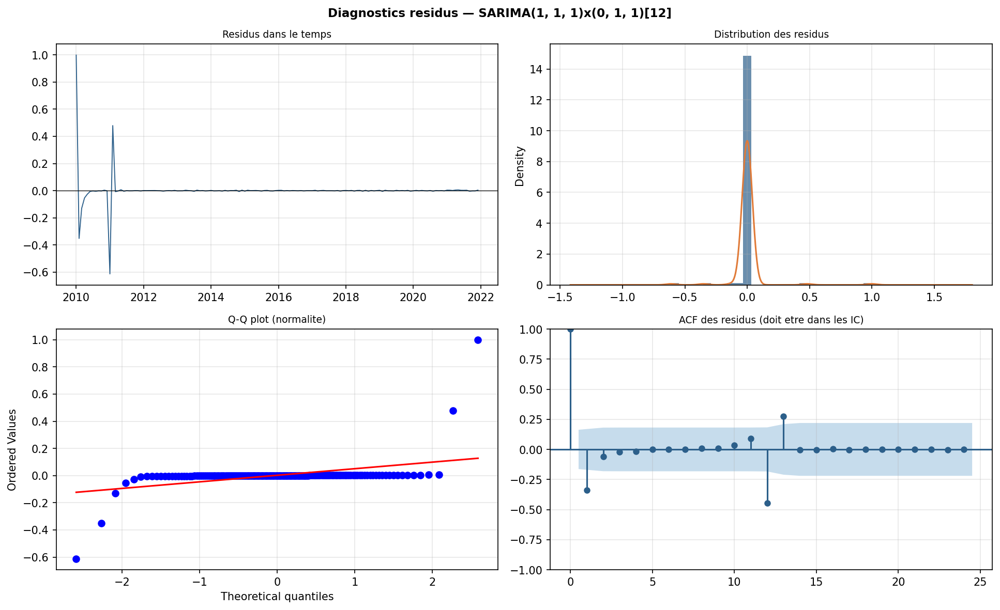
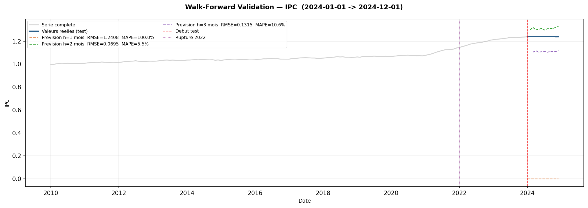
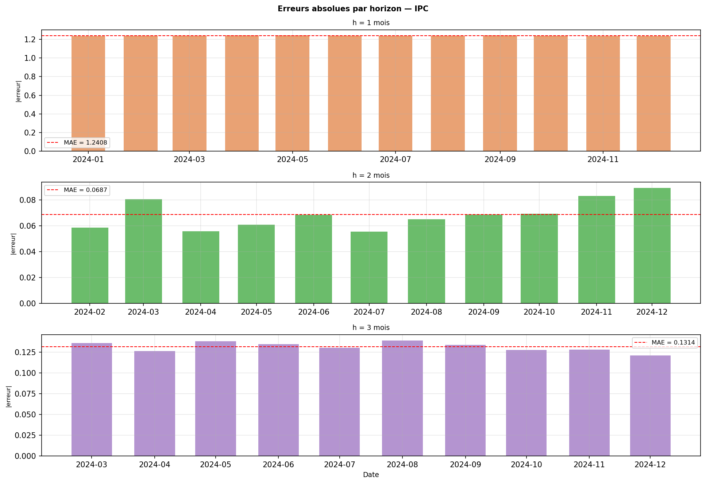

📊 Statistiques Clés
BESI Moyen
IPC Moyen
BESI Max
Rupture 2022
🎯 Résultats Clés
- Le BESI constitue un indice composite robuste combinant signaux digitaux
- Rupture structurelle 2022 clairement identifiée (choc inflationniste)
- Amplification du signal : BESI augmente 3× vs IPC 1.16×
- Corrélation très forte (0.9156) valide la méthodologie
- Lead time potentiel pour alerte précoce (à tester via SARIMAX)
📈 Dashboard final — 6 graphiques

IPC mensuel + taux d'inflation YoY
IPC mensuel et inflation annuelle sur le même visuel pour relier le niveau et la variation.

BESI over time avec zones de stress colorées
Lecture directe des zones Normal, Warning et High Stress dans le temps.

Signaux individuels normalisés
Comparaison des séries Google Trends, Reddit et YouTube après normalisation [0,1].

Comparaison SARIMA vs SARIMAX — prédictions vs réel
Comparaison visuelle du modèle baseline et de la version enrichie par les signaux comportementaux.

Analyse lag : corrélation BESI → IPC par lag
Mesure l'avance potentielle du BESI sur l'évolution officielle de l'IPC.

Performance par période (avant/pendant/après 2022) — grouped bar
Lecture comparative des performances de SARIMA et SARIMAX selon les trois régimes temporels.
📉 Analyse de Stationnarité

1. Décomposition STL de l'IPC
Sépare la tendance, la saisonnalité et le résidu pour vérifier la structure de la série.

2. Série originale vs transformée
Montre l'effet des différenciations nécessaires pour rendre la série plus stationnaire.

3. ACF / PACF de l'IPC
Permet d'identifier les ordres p et q, ainsi que les éventuelles composantes saisonnières.

4. Corrélation BESI → IPC
Mesure si le BESI anticipe l'IPC de quelques mois et sert d'indicateur avancé.
📊 Modélisation SARIMA Baseline

1. Diagnostics des résidus
Vérifie l'autocorrélation, la distribution et la normalité des résidus du modèle SARIMA.

2. Walk-Forward Validation
Compare les prévisions SARIMA aux valeurs réelles sur la période test avec plusieurs horizons.

3. Erreurs par horizon
Montre l'évolution de l'erreur absolue pour h=1, h=2 et h=3 mois.
4. Décomposition STL
Rappelle la tendance, la saisonnalité et le résidu utilisés pour l'analyse de stationnarité.
🔄 Modélisation SARIMAX — Comparaison des Variantes
Session 7 — Évaluation de l'apport prédictif des signaux comportementaux
Objectif
Comparer SARIMA baseline avec trois variantes de SARIMAX exogènes : (1) SARIMAX(Google Trends seul) — isoler l'impact de Google, (2) SARIMAX(BESI complet) — tester l'indice composite, (3) SARIMAX(toutes features) — utiliser tous les signaux significatifs.
Cette comparaison quantifie précisément le gain prédictif apporté par les signaux comportementaux (en %) et valide ou réfute H1 : "Les signaux digitaux améliorent-ils vraiment la prévision?"
📊 Graphiques SARIMAX en cours de génération…
Sera exécuté lors du prochain run de python src/models.py
⚠️ Rupture Structurelle 2022 et Early Warning
Session 8 — Détection formelle de la rupture et capacité d'alerte précoce
Méthodologie
- Test de Chow : Détecte formellement une rupture structurelle (H₀ : paramètres stables)
- CUSUM (Brown-Durbin-Evans) : Graphique de contrôle des résidus cumulés
- Analyse par période : Mesure RMSE/MAE pour SARIMA vs SARIMAX dans 3 régimes temporels
- Pre-COVID (2010–2019) — période stable
- Choc inflationniste (2020–2022) — volatilité accrue
- Post-choc (2022–2024) — adaptation du marché
- Lead time quantifié : De combien de mois le BESI anticipe-t-il le stress IPC ?
📊 Graphiques d'analyse en cours de génération…
Sera exécuté lors du prochain run de python src/analysis.py
✅ État du Projet et Prochaines Étapes
Terminé (Sessions 3–6) : Pipeline de données complet, BESI construit et validé (corrélation 0.9156 avec IPC), features sélectionnées statistiquement, stationnarité testée, SARIMA baseline estimée et validée.
En cours (Sessions 7–8) : Modélisation SARIMAX comparée à SARIMA, test de Chow pour la rupture 2022, analyse de performance par période, quantification du lead time et de la capacité d'alerte précoce (early warning).
Prochaines étapes : Génération des graphiques SARIMAX et analyse structurelle, puis rapport final avec réponses définitives aux questions de recherche.